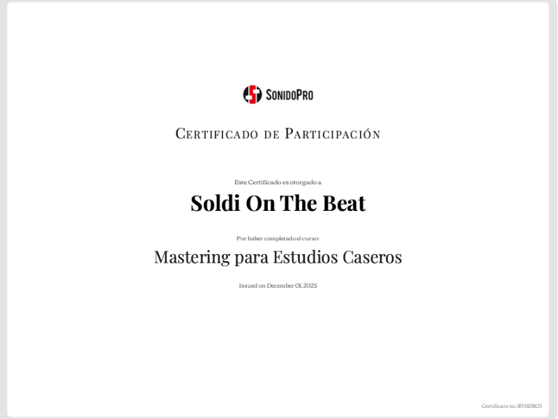
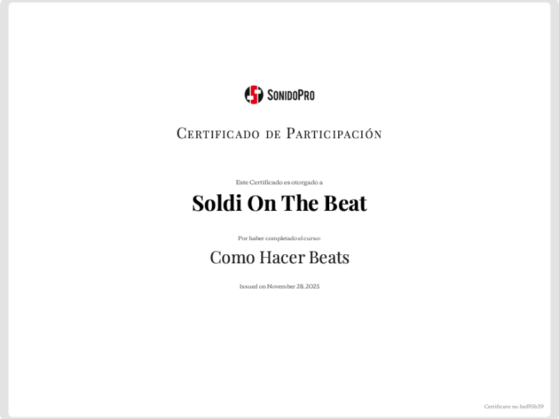
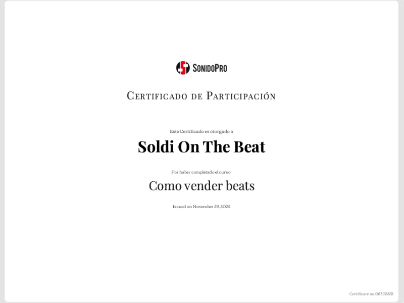
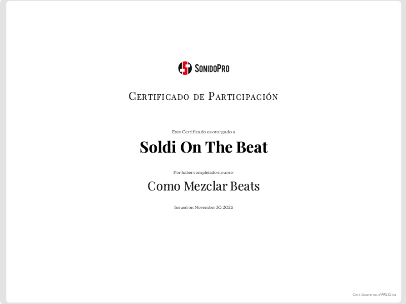
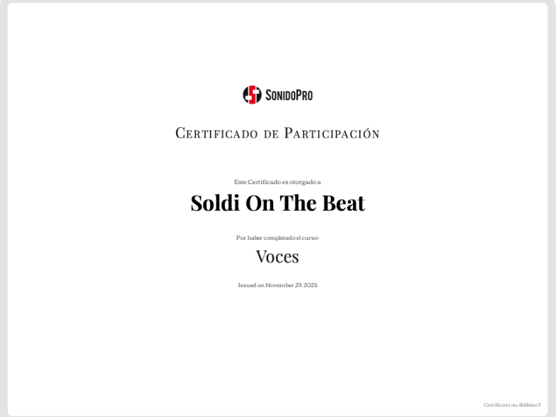

Certificado 01



Soy Soldi On The Beat, productor enfocado en el desarrollo de sonido urbano moderno.
Mi enfoque no es seguir tendencias, sino construir identidad.
Trabajo principalmente en géneros como trap, boom bap y variantes modernas, combinando sonido clásico con estética actual.
Cada beat está pensado para potenciar al artista y darle dirección.
Desde el inicio de mi carrera, siempre he tenido un enfoque muy claro: buscar y apoyar el potencial real de cada artista con el que trabajo.
Más allá de simplemente producir beats, me interesa construir una relación de crecimiento mutuo, donde tanto el artista como yo podamos sumar experiencia y evolucionar juntos.
Esta filosofía me ha permitido no solo desarrollar mi identidad como productor, sino también ayudar a otros a encontrar la suya.
Mi rol en las colaboraciones va más allá de la producción técnica: me involucro en la dirección musical, el desarrollo del sonido y la construcción integral del track, siempre buscando que cada proyecto tenga una identidad auténtica y diferenciada.
En resumen, para mí colaborar y crecer juntos es un proceso de creación conjunta, donde la confianza, la pasión y la visión compartida son la base para lograr resultados que trascienden lo meramente musical.
Mi proceso creativo y apasionado se basa en la escucha activa y la experimentación constante. Me gusta explorar nuevas texturas y sonidos, pero siempre manteniendo la esencia y la identidad del artista como eje central.
Creo firmemente que la música es una herramienta poderosa para contar historias y conectar con las emociones, por eso cada producción que realizo busca transmitir algo auténtico y significativo.
Otorgados por Sonido Pro.







En mi trabajo, me enfoco en desarrollar instrumentales que no solo acompañen, sino que inspiren y potencien la expresión del artista. Busco crear ambientes sonoros únicos, donde cada elemento tiene un propósito y contribuye a contar una historia a través de la música.
Analizo el estilo del artista, sus referencias y su energía antes de producir. No hago beats al azar: cada producción tiene intención y propósito claro.
Mi objetivo es que cada track tenga personalidad, impacto y coherencia, reflejando la esencia única del artista y su mensaje.
Trabajo mano a mano con el artista, fomentando un ambiente de confianza y creatividad para potenciar el mejor resultado posible.
Me mantengo actualizado con las últimas tendencias y técnicas de producción, combinando innovación con calidad para crear sonidos frescos y profesionales.
Cada proyecto es un compromiso personal. Mi pasión por la música se refleja en cada detalle, buscando siempre superar expectativas y entregar un producto excepcional.